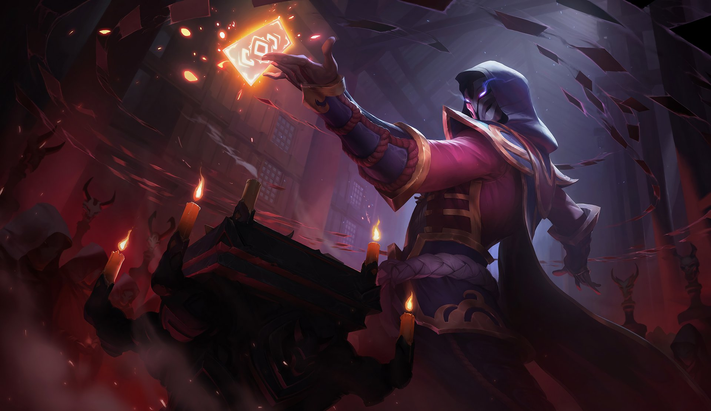
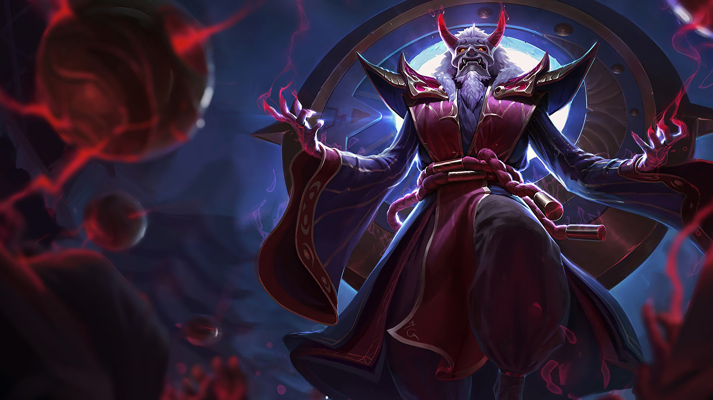
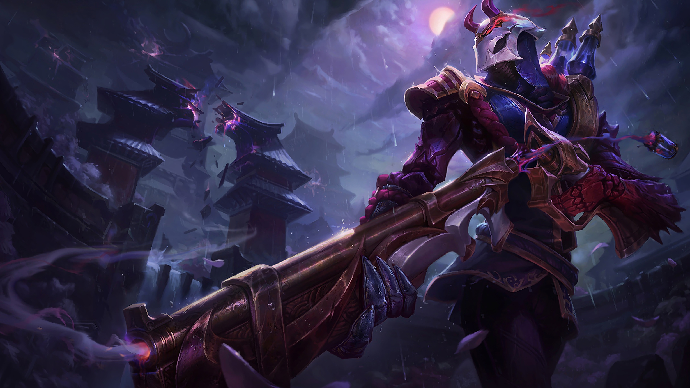
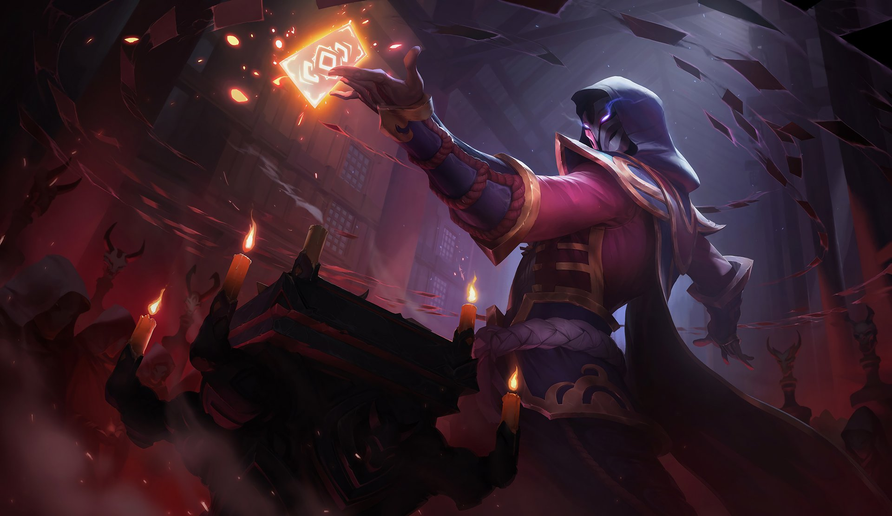
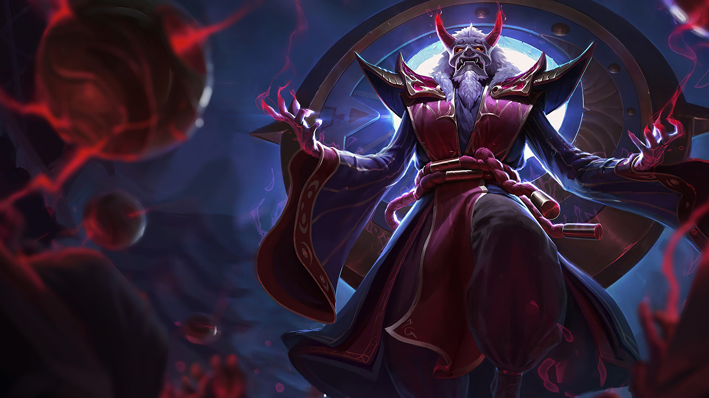
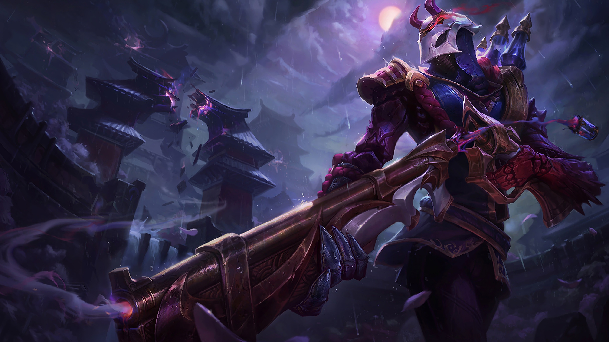

|
Lore
BANDLE CITY
Są różne opinie dotyczące tego, gdzie dokładnie znajduje się ojczyzna Yordlów, choć wielu śmiertelników zapewnia,
że odbyło podróż przez niewidoczne ścieżki wprost do niematerialnej krainy osobliwych czarów. Ci rzekomi podróżnicy opowiadają o miejscu,
w którym magia nie jest niczym ograniczana. Miejscu, w którym lekkomyślni mogą zostać sprowadzeni na manowce przez miriady dziwów i cudów, a następnie zabłądzić we śnie…
Mówi się również, że w Bandle City ktoś, kto nie jest Yordlem, przeżywa każde doświadczenie bardziej intensywnie. Kolory są dla niego bardziej wyraziste. Jedzenie i picie wpływa na zmysły na całe lata i nigdy nie da się zapomnieć ich smaku.
Promienie słońca są wiecznie złote, woda krystalicznie czysta, a każde żniwa przynoszą owocne dary. Być może część z tych opowieści jest prawdziwa, a być może żadna z nich nie jest, gdyż nigdy nie znalazło się dwóch opowiadających, których relacje by się pokrywały.
Jedno jest pewne: niezwykła odporność Bandle City i jego mieszkańców na czas. To może wyjaśniać, czemu wielu spośród śmiertelników,
którzy znaleźli to miasto i którym udało się powrócić, niebywale się postarzało, jak również to, że znaczna część podróżujących w ogóle nie powróciła.
Bilgewater, ukryte w archipelagu Wysp Niebieskiego Płomienia,
jest jedynym w swoim rodzaju miastem portowym, które zamieszkują łowcy węży, gangi z doków i szmuglerzy z całego świata. Można tu w okamgnieniu zbić fortunę albo rozstać się z ambicjami.
Dla tych, którzy uciekają przed wymiarem sprawiedliwości, długami bądź wyrokiem,
Bilgewater może się stać miejscem nowego początku, ponieważ nikt na tych zdegenerowanych ulicach nie interesuje się twoją przeszłością.
Mimo to każdego poranka na przystani można znaleźć pływające zwłoki lekkomyślnych podróżnych, których sakiewki są puste, a gardła poderżnięte...
Choć Bilgewater jest nieprawdopodobnie niebezpieczne, to interesy kwitną tutaj w najlepsze, wolne od kajdan rządu i regulacji handlowych.
Jeżeli masz pieniądze, możesz tu kupić prawie wszystko, począwszy od nielegalnego hextechu, a skończywszy na przychylności przywódców lokalnych gangów.
Po niedawnym usunięciu ostatniego króla łupieżców Bilgewater rozpoczęło okres przemian, a najznamienitsi kapitanowie poczęli snuć plany co do przyszłości miasta.
Jednak póki istnieją statki godne morskich fal i równe im załogi, Bilgewater najpewniej pozostanie jednym z najróżnorodniejszych i dobrze skomunikowanych miejsc na mapie Runeterry.
BILGWATER
Mieszkańcy Demacii, potężnego, praworządnego królestwa ze znakomitą historią militarną, od zawsze nade wszystko cenili ideały takie jak sprawiedliwość, honor i służba. Są również niesamowicie dumni ze swojego dziedzictwa kulturowego.
Lecz mimo wyniosłych zasad, to w raczej samowystarczalne państwo przez ostatnie parę stuleci stawało się coraz bardziej zamknięte i izolacjonistyczne.
Aktualnie w królestwie Demacii panuje zamęt.
Jego stolica, Wielkie Miasto Demacia, została założona, by być ostoją przed wszelkim czarnoksięstwem po koszmarze, jakim były Wojny Runiczne. Zbudowano ją z tajemniczego petrucytu,
przedziwnego białego kamienia tłumiącego magiczną energię. To właśnie stąd rodzina królewska od dawien dawna sprawuje pieczę nad prowincjonalnymi miastami i osadami, farmami, lasami oraz górami bogatymi w zasoby mineralne.
Jednakże inne rodziny szlacheckie nie wyraziły jeszcze zgody na przejęcie tronu przez jego jedynego dziedzica, młodego księcia Jarvana, po nagłej śmierci Króla Jarvana III.
Na wszystkich mieszkańców tego państwa o pilnie strzeżonych granicach spoglądają coraz to podejrzliwsze spojrzenia, a wielu dawnych sojuszników zaczęło rozglądać się za schronieniem gdzieś indziej w tych niepewnych czasach. Niektórzy śmią szeptać,
że złoty wiek Demacii przeminął i jeśli jej mieszkańcy nie przystosują się do zmieniającego się świata — a wielu wierzy, że po prostu nie są w stanie tego zrobić — upadek królestwa będzie nieuchronny.
Nawet cały petrucyt na świecie nie uratuje Demacii przed samą sobą.
DEMACIA
Freljord to dzikie i nieprzyjazne miejsce — ludzie rodzą się tu wojownikami, którzy całe życie spędzają na walce z wszelkimi przeciwnościami.
Dumne i niezależne plemiona Freljordu często określane są przez sąsiadów z Valoranu mianem dzikich, nieokiełznanych i niecywilizowanych. Nie znają oni bowiem pradawnych tradycji, które ukształtowały te ludy. Wiele tysięcy lat temu przymierze zawarte między siostrami Avarosą, Seryldą i Lissandrą zostało zerwane przez wojnę, która skazała północ na chaos i wieczną zimę, a nawet zagroziła całej krainie Runeterra. Teraz tylko najtrwalsi śmiertelnicy,
którym niestraszny jest płomienny żar i zacinający mróz, są w stanie prowadzić swe plemiona ku lepszemu jutru.
Pomimo wysiłków Mroźnej Straży, mity i legendy wciąż głoszą historie o dawnych bogach, tajemniczych yeti i niezłomnych Duchowych Wędrowcach. Najeźdźcy Zimowego Szponu docierają każdego roku coraz dalej, napierając na granice Demacii na południu i Noxusu na wschodzie.
Kiedy wreszcie pojawiła się iskierka nadziei na bezpieczną przyszłość, rozproszone plemiona i klany pod przewodnictwem Ashe — młodej królowej Avarosan — podjęły próbę zawarcia sojuszu.
Nawet to nie miało jednak być końcem problemów. Wojna z pewnością powróci do Freljordu i nikt nie ucieknie przed jej okrucieństwem.
FRELJORD
Otoczona przez zdradliwe morza Ionia składa się z wielu sprzymierzonych prowincji rozrzuconych po ogromnym archipelagu, znanym wielu pod nazwą Pierwotnej Krainy. Ioniańską kulturę od dawna kształtuje dążenie do równowagi we wszystkim, więc świat materialny i duchowy łatwiej się nawzajem przenikają, szczególnie w dzikich lasach i górach.
Choć magia tych ziem bywa kapryśna, a zamieszkujące je stworzenia niebezpieczne i zaczarowane, przez wiele stuleci większość Ioniańczyków wiodła dostatnie życie. Klasztory wojowników, lokalna milicja — a nawet sama Ionia — wystarczały, by ich ochronić.
Lecz wszystko to skończyło się dwanaście lat temu, kiedy Noxus najechał Pierwotną Krainę. Pozornie nieskończone korpusy wojenne imperium zaatakowały Ionię i zostały pokonane dopiero wiele lat później, lecz zwycięstwo zostało okupione ogromną ceną.
Teraz Ionia trwa w stanie niepewnego pokoju. Region ten podzieliły różne reakcje na wojnę — niektóre grupy, jak na przykład mnisi z Shojin albo Zakon Kinkou, pragną powrotu do izolacjonizmu, pacyfizmu i tradycji pastoralnych. Inne, radykalniejsze frakcje, takie jak Bractwo Navori czy Zakon Cienia, żądają wykorzystania magii krainy jako broni w celu stworzenia jednego, zjednoczonego narodu, który mógłby się zemścić na Noxusie.
Los Ionii znajduje się w chwiejnej równowadze, którą niewielu chciałoby zaburzyć, lecz wszyscy czują, że szale chyboczą się pod ich stopami.
IONIA
Słynący z władania magią żywiołów, Ixtal był jednym z pierwszych niezależnych narodów, które dołączyły do imperium Shurimy. Po prawdzie ixtalska kultura jest o wiele starsza — była częścią wielkiej emigracji na zachód, która dała początek cywilizacjom, spośród których można wymienić lud Buhru, wspaniałą Helię oraz ascetów z Targonu — i prawdopodobnie odegrała niemałą rolę w stworzeniu pierwszych Wyniesionych.
Lecz magowie z Ixtal przetrwali Pustkę, a później Darkinów, oddalając się od swoich sąsiadów i wykorzystując otaczającą ich puszczę niczym tarczę. Choć ponieśli ogromne straty, oddali się pielęgnowaniu tego, co zostało…
Od tysięcy lat stojąca w odosobnieniu w głębi dżungli, technicznie zaawansowana arkologia Ixaocan w większości wciąż jest wolna od zewnętrznych wpływów. Ixtalczycy byli świadkami zrujnowania Błogosławionych Wysp i Wojen Run, które nastąpiły potem, dlatego mają inne frakcje Runeterry za parweniuszy i pozerów. Używają swojej potężnej magii żywiołów, by trzymać wszelkich intruzów na dystans.
IXTAL
Noxus to potężne imperium z przerażającą reputacją. Dla tych, którzy żyją poza jego granicami, Noxus jest okrutnym, zagrażającym wolności imperium, jednak ci, którzy zajrzą pod zewnętrzną warstwę, dostrzegą tolerancyjne społeczeństwo, które dba o talenty i rozwój swoich obywateli.
Noxianie byli niegdyś barbarzyńskim plemieniem. Zmieniło się to dopiero po przejęciu starożytnego miasta, które służy im teraz za stolicę. Ponieważ wrogowie czyhali z każdej strony, konsekwentnie zaczęli im się przeciwstawiać, z każdym rokiem stopniowo, krok po kroku, rozszerzając granice swego państwa. Walka o przetrwanie uczyniła ze współczesnych Noxian dumny lud, który ponad wszystko ceni sobie siłę. Ta jednak może objawić się w różnoraki sposób.
Każdy, niezależnie od pozycji społecznej, pochodzenia i bogactwa, jest w stanie piąć się po szczeblach władzy i poważania, o ile tylko wykaże się odpowiednimi zdolnościami. Wysoko ceni się i pożąda tych, którzy potrafią używać magii — Noxus wyszukuje magów nawet poza swoimi granicami, by następnie szlifować i wykorzystywać ich specjalne talenty w służbie imperium.
Mimo merytokratycznych ideałów, stare rody szlacheckie wciąż cieszą się dużym autorytetem... Niektórzy obawiają się nawet, że największe zagrożenie dla Noxusu nie przyjdzie z zewnątrz, ale już kiełkuje wewnątrz jego murów.
NOXUS
Piltover to prosperujące i postępowe miasto, którego władza i wpływy stają się coraz większe. To centrum kultury Valoranu, gdzie sztuka, rzemiosło,
handel oraz innowacja stoją ramię w ramię. Piltover nie zawdzięcza swojej potęgi silnej armii, lecz prężnie rozwijającemu się handlowi i innowacyjności.
Miasto mieści się na klifach nad dzielnicą Zaun i wygląda na ocean. Floty statków przepływają przez jego olbrzymie morskie bramy, przywożąc towary z całego świata.
Generowane w ten sposób zyski przyczyniły się do niesamowitego rozwoju miasta. Piltover od zawsze było miastem, w którym można dorobić się fortuny i realizować marzenia.
Prężnie rozwijające się klany handlowe dofinansowują rozwój najbardziej niesamowitych przedsięwzięć: wielkich dekoracji artystycznych, niezwykłych badań hextechowych oraz architektonicznych arcydzieł. Ponieważ coraz więcej wynalazców zaczyna interesować się hextechem, Piltover stało się domem najwspanialszych rzemieślników na świecie.
PILTOVER
|